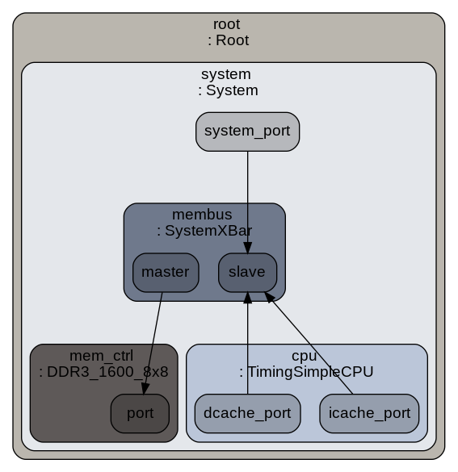

Visualize gem5 configuration
This tutorial is for converting your configuration script into image to develop a visualization and verification
of desired model. We will create the pictorial model of the configuration script we prepared in the last time. To watch the previous tutorial and script. Click
Step 1. Download pydot python package and graphviz software
To download pydot package
sudo apt-get install python-pip
pip install pydot
To download graphviz package
sudo apt-get install graphviz
Step 2. Rebuild the system
scons build/RISCV/gem5.opt -j 9
Step 3. Run the configuration script
build/RISCV/gem5.opt configs/myScripts/simple.py
Step 4. Output
description goto m5out folder you will see a config.dot file. Convert dot file into png file
cd m5out
dot -Tpng -o config.png config.dot
image file will be generated for configuration script
